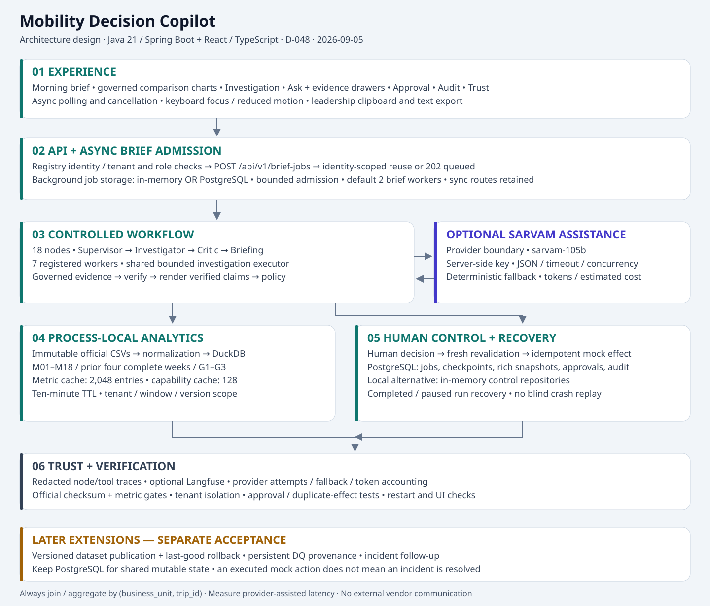

Updated 2026-09-05 under D-048. Sarvam is optional; live-key latency is not verified. PostgreSQL preserves completed or paused runs. Dataset publication and incident follow-up are proposed additions. This page replaces the earlier component explainer; the existing PNG export is historical.